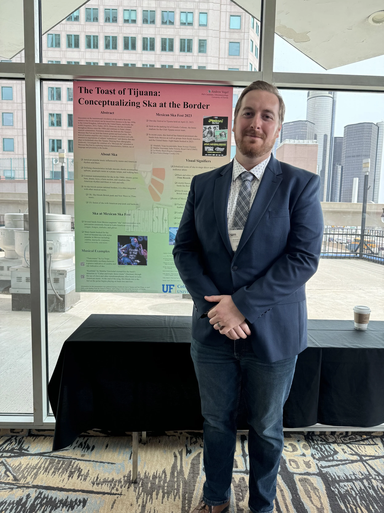
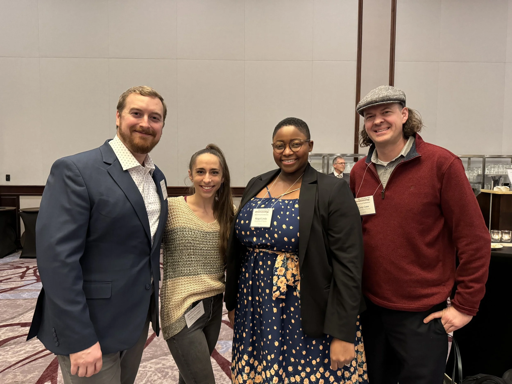

About Andrew


Andrew Vogel is a saxophonist, educator, and researcher from St. Louis, Missouri. He is a PhD candidate in Ethnomusicology with a cognate in Anthropology at the University of Florida. His dissertation, “We Do the Ska: Circulating Ska in Mexico and Southern California,” takes a multi-sited ethnographic approach to examine how ska music is currently performed and its intersections with political discourses such as migration, economics, gender, and indigenous rights.
In addition to his focus on Jamaican popular music, Andrew has a deep passion for the study and performance of Afrodiasporic music. His expertise extends to jazz studies and popular music studies, both as a performer and scholar. His past research, which can be read on his Half Brewed Blog, has explored topics such as representations of Africa in Duke Ellington's work, the reception of Black androgyny in popular music, and the cultural implications of antebellum “coon songs” in maintaining racism in American society.
Over the last decade, Andrew has taught undergraduate courses at institutions such as Rutgers University, Webster University, Shenandoah University, and the University of Florida. He brings a diverse teaching portfolio that includes courses on American popular music, jazz history, and world music. He is especially passionate about helping students connect their personal experiences to the broader cultural and historical contexts of music.
In addition to his scholarly work and teaching, Andrew is an accomplished performer. He co-led the ska band Samuriot with Nate Golomski, sharing the stage with renowned acts such as Reel Big Fish, The Aquabats, Mephiskapheles, and Mustard Plug. In 2018, he had the opportunity to perform with The Temptations. Since 2017, Andrew has also led his own jazz project, showcasing his versatility as a musician. Additionally, Andrew has performed with the University of Florida Afro Pop Ensemble since its inception in fall 2021and the University’s Persian Ensemble which was founded in 2023.
Andrew’s work reflects a deep commitment to exploring the cultural, historical, and political dimensions of music, both in his scholarship and performance.